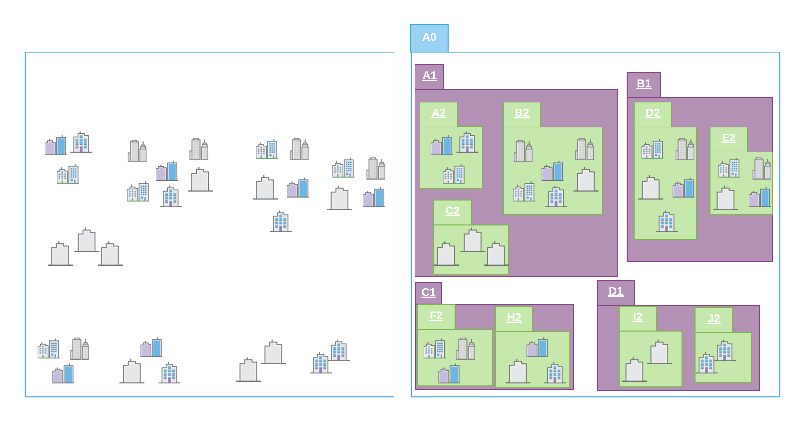

Open Geospatial Consortium |
Submission Date: 2022-07-20 |
Approval Date: 2022-xx-xx |
Publication Date: 2022-xx-xx |
External identifier of this OGC® document: http://www.opengis.net/doc/CS/i3s/1.3 |
Internal reference number of this OGC® document: 17-014r9 |
Version: 1.3 |
Category: OGC® Community Standard |
Editors: Carl Reed, Tamrat Belayneh |
OGC Indexed 3d Scene Layer (I3S) and Scene Layer Package (*.slpk) Format Community Standard Version 1.3 |
Copyright notice |
Copyright © 2022 Open Geospatial Consortium |
To obtain additional rights of use, visit http://www.opengeospatial.org/legal/ |
Warning |
This document is an OGC Member endorsed international Community Standard. This Community Standard was developed outside of the OGC and the originating party may continue to update their work. However, this document is fixed in content. This document is available on a royalty free, non-discriminatory basis.
Recipients of this document are invited to submit, with their comments, notification of any relevant patent rights of which they are aware and to provide supporting documentation.
Document type: OGC® Community Standard |
Document subtype: |
Document stage: Approved |
Document language: English |
Esri (Environmental Systems Research Institute, Inc.)
The companies listed above have granted the Open Geospatial Consortium (OGC) a nonexclusive, royalty-free, paid up, worldwide license to copy and distribute this document and to modify this document and distribute copies of the modified version under a Creative Commons ShareAlike (CC BY-SA) license (see below).
License Agreement
The standard is licensed under the Creative Commons Attribution-ShareAlike 4.0 International (CC BY-SA 4.0).[1] You can implement this standard in services, clients or processing tools without restrictions.
You are directed to the License for specific details.
This is a human-readable summary of (and not a substitute for) the license.
You are free to:
Share — copy and redistribute the material in any medium or format
Adapt — remix, transform, and build upon the material for any purpose, even commercially.
The licensor cannot revoke these freedoms as long as you follow the license terms.
Under the following terms:
-
Attribution — You must give appropriate credit, provide a link to the license, and indicate if changes were made. You may do so in any reasonable manner, but not in any way that suggests the licensor endorses you or your use.
-
ShareAlike — If you remix, transform, or build upon the material, you must distribute your contributions under the same license as the original.
-
No additional restrictions — You may not apply legal terms or technological measures that legally restrict others from doing anything the license permits.
Notices:
You do not have to comply with the license for elements of the material in the public domain or where your use is permitted by an applicable exception or limitation.
No warranties are given. The license may not give you all of the permissions necessary for your intended use. For example, other rights such as publicity, privacy, or moral rights may limit how you use the material.
- 1. Introduction
- 2. Conformance
- 3. References
- 4. Terms and Definitions
- 5. Conventions
- 6. Introduction to I3S and SLPK
- 7. I3S Standard - Normative
- 8. Organization and Structure
- 9. Level of Detail
- 10. I3S Services
- 11. I3S Formats
- 12. Media Types for any data encoding(s)
- Annex A: I3S Scene Layer Profile - Mesh-pyramids (MP)
- Annex B: Annex B
- Acknowledgements
- Annex C: JSON Resources Schema and Documentation (Was Clause 7.6 in 1.1)
- Annex D: Revision History

i. Abstract
The Indexed 3D Scene Layer (I3S) format is an open 3D content delivery format used to rapidly stream and distribute large volumes of 3D GIS data to mobile, web and desktop clients. I3S content can be shared across enterprise systems using both physical and cloud servers.
A single I3S data set, referred to as a Scene Layer, is a container for arbitrarily large amounts of heterogeneously distributed 3D geographic data. Scene Layers are designed to be used in mobile, desktop, and server-based workflows and can be accessed over the web or as local files.
The delivery format and persistence model for Scene Layers, referred to as Indexed 3d Scene Layer (I3S) and Scene Layer Package (SLPK) respectively, are specified in detail in this OGC Community Standard. Both formats are encoded using JSON and binary ArrayBuffers (ECMAScript 2015). I3S is designed to be cloud, web and mobile friendly. I3S is based on JSON, REST and modern web standards and is easy to handle, efficiently parse and render by Web and Mobile Clients. I3S is designed to stream large 3D datasets and is designed for performance and scalability. I3S is designed to support 3D geospatial content and supports the requisite coordinate reference systems and height models in conjunction with a rich set of layer types.
The open community GitHub source for this Community Standard is here.
ii. Source of this document
The majority of the content in this OGC document is a direct copy of the content contained at https://github.com/Esri/i3s-spec . No normative changes have been made to the content. This OGC document does contain content not in source Esri GitHub repository. Specifically, while derived from content on the Esri I3S repository, the Abstract, Keywords, Preface, Submitting Organizations, Endorsers, Terms and Definitions, and References sections and Annex B (Bibliography) in this document are not found on the Esri I3S repository. The Terms and Definitions and References sections may be added into the Esri community GitHub repository in the future.
iii. Validity of content
The Submission Team has reviewed and certified that the snapshot
content in this Community Standard is true and accurate. The snapshot for OGC I3S Version 1.3 was taken on April 23, 2022 from the Esri version 1.7 Git Repository.
iv. Keywords
The following are keywords to be used by search engines and document catalogues.
ogcdoc, OGC document, i3s, 3d, point clouds, visualization, scene, scene layer, slpk
vi. Preface
I3S originated from investigations into technologies for rapidly streaming and distributing large volumes of 3D content across enterprise systems that may consist of server components, cloud hosted components, and a variety of client software from desktop to web and mobile applications.
Attention is drawn to the possibility that some of the elements of this document may be the subject of patent rights. The Open Geospatial Consortium shall not be held responsible for identifying any or all such patent rights.
Recipients of this document are requested to submit, with their comments, notification of any relevant patent claims or other intellectual property rights of which they may be aware that might be infringed by any implementation of the standard set forth in this document, and to provide supporting documentation.
iv. Submitting organizations
The following organizations submitted this Document to the Open Geospatial Consortium (OGC):
Organization name(s)
Esri, Inc.
v. Supporting Organizations
The following organization support the submission of the I3S Community Standard version 1.3 to the OGC:
| Name | Affiliation |
|---|---|
Keith Ryden |
Esri |
Carl Reed |
Carl Reed & Associates |
Jerome Jacovella-St-Louis |
Ecere |
Gordon Plunkett |
Esri Canada |
Vijay Kumar |
Esri India Technologies |
Anneley Hadland |
Helyx Secure Information Systems Ltd |
Volker Coors |
Hochschule für Technik Stuttgart |
Clemens Portele |
Interactive Instruments |
Jeongeun (Bomi) Lee |
KoreaLand & Geospatial InformatiX Corporation |
Cesar Suarez, Hermann Brassard |
Presagis |
Dean Hintz |
Safe Software |
Note on supporting organizations. As per the OGC Technical Committee Policies and Procedures:
-
Any Community Standard submission requires that three or more distinct Member organizations support the submission. In addition to the submission team lead, each organization supporting the submission shall provide the OGC with an email stating their organization’s support of the submission.
Please note that all questions and/or comments regarding this OGC Community Standard should be documented by submitting a GitHub issue in the OGC I3S GitHub repository.
vi. Future Work The I3S community anticipates that revisions to this Community Standard will be required to prescribe content appropriate to meet new use cases. These use cases may arise from either (or both) the external user and developer community or from OGC review and comments. Further, future revisions will be driven by any submitted change requests that document community uses cases and requirements.
1. Introduction
Scene Layers provide a structured way for clients to store and visualize large volumes of 3D data. I3S organizes information into node hierarchies that contain features with geometry, textures and attributes.
A Scene Layer is characterized by a combination of layer type and profile. The layer type describes the kind of geospatial data stored within it. The layer profile includes additional details on the specific I3S rules for implementation.
The I3S format is declarative and extendable and can be used to represent different types of 3D data. The following layer types have been specified and the validated via implementation and production deployments:
-
3D Objects such as Building Exteriors from geospatial data and 3D models.
-
Integrated Meshes such as a mesh surface with high resolution imagery textures representing the skin of the Earth, typically created from satellite, aerial or drone imagery.
-
Point Features such as geolocated hospitals or schools, trees, street furniture, and signs.
-
Point Clouds such as large point data from LiDAR.
-
Building Scene Layer - comprehensive building model including building components.
I3S is designed to support large datasets of 3D content ranging from local to global extent containing detailed features. Clients can visualize scene layers by taking advantage of the multi-LoD (level of detail) representation and symbology to create the right user experience for visualizing the 3D content. The I3S format continues to evolve and new functionality continues to be added.
I3S is organized as nodes, which are structured into node pages. The node page includes the bounding volume, child reference, count and the level of detail selection. Nodes contain all the information to describe features including geometry, attributes and textures. Scene Layers can be created in cartesian 3D or in global 3D world coordinate reference systems. I3S Scene Layers can be delivered to web, mobile and desktop clients. Most users will interact with Scene Layers using applications with cloud or server-based information. In these cases, the scene layer content is on the server and is provided to clients through a RESTful interface. These web addressable resources provide access to the scene layer, nodes, and associated resources. Alternatively, a scene layer can be delivered as a Scene Layer Package. This is a single file that includes the complete node tree and all necessary resources in an archive.
The Indexed 3d Scene Layer (I3S) and Scene Layer Package (*.slpk) are open formats and not dependent on any vendor specific solution, technology, or products.[3] The specification for accessing I3S resources as Scene Service REST endpoints is also described in this standard as open formats.
3. References
The following normative documents contain provisions that, through reference in this text, constitute provisions of this document. For dated references, subsequent amendments to, or revisions of, any of these publications do not apply. For undated references, the latest edition of the normative document referred to applies.
Normative
OGC SF [99-036/ISO 19125]: Geographic information - Simple feature access - Part 1: Common architecture. 2005. https://www.iso.org/obp/ui#iso:std:iso:19162:ed-2:v1:en August 17, 2019.
OGC WKT CRS [12-063r5/ISO 19162:2019]: Geographic information — Well-known text representation of coordinate reference systems. 2019. http://portal.opengeospatial.org/files/?artifact_id=4700 (May 15, 2017)
Informative
"Octree". https://en.wikipedia.org/wiki/Octree. Not Published (N.P.), 2016. Web. 20 Oct. 2016.
"Quadtree". https://en.wikipedia.org/wiki/Quadtree. N.P. 2017. Web. 20 Jan. 2017
"R-Trees". https://en.wikipedia.org/wiki/R-tree. N.P. 2017. Web. 20 Jan. 2017
4. Terms and Definitions
This document uses the terms defined in Sub-clause 5.3 of [OGC 06-121r8], which is based on the ISO/IEC Directives, Part 2, Rules for the structure and drafting of International Standards. In particular, the word “shall” (not “must”) is the verb form used to indicate a requirement to be strictly followed to conform to this standard.
For the purposes of this document, the following additional terms and definitions apply.
3D Model [1] Three-dimensional (3D) models represent a physical body using a collection of points in 3D space, connected by various geometric entities such as triangles, lines, curved surfaces, etc.
ArrayBuffer In JavaScript, the ArrayBuffer object is used to represent a generic, fixed-length raw binary data buffer. ArrayBuffer is an abstract type that is the base for the following types: DataView, Float32Array, Float64Array, Int8Array, Int16Array, Int32Array, Uint8Array, Uint8ClampedArray, Uint16Array, Uint32Array.
Bin Size A histogram displays numerical data by grouping data into "bins" of equal width. Each bin is plotted as a bar whose height corresponds to how many data points are in that bin. Bins are also sometimes called "intervals", "classes", or "buckets". (Khan Academy July 6, 2022)
Bounding Volume (BV) [2] A closed volume that completely contains the union of the objects in the set. Bounding volumes are used to improve the efficiency of geometrical operations by using simple volumes to contain more complex objects.
Bounding Volume Hierarchy (BVH) [3] A tree structure on a set of geometric objects. All geometric objects are wrapped in bounding volumes that form the leaf nodes of the tree.
Community Standard An OGC Community Standard is an official position of the OGC endorsing a specification or standard developed external to the OGC.
Face 2-dimensional topological primitive. In solid geometry, a face is a flat (planar) surface that forms part of the boundary of a solid object; a three-dimensional solid bounded exclusively by flat faces is a polyhedron.
faceRanges Indicates the range of faces (triangles in a mesh) associated with a particular object (feature).
Gravity-related height Height dependent on the Earth’s gravity field. NOTE: This refers to in particular orthometric height or normal height, which are both approximations of the distance of a point above the mean sea level. (ISO 19111)
Height Distance of a point from a chosen reference surface measured upward along a line perpendicular to that surface. NOTE: A height below the reference surface will have a negative value.
Integrated Mesh An Integrated Mesh is a type of I3S layer that belongs to the mesh-pyramids profile. An Integrated Mesh layer type is typically used to represent and visualize geographic data captured as ‘3D Image’ representing the landscape in a seamless, highly scalable, textured mesh. Such ‘3D Image’ can integrate within its content a multitude of landscape elements including terrain surface, ground imagery, vegetation, man-made objects and structures, and water surfaces. This type of data is typically produced by automated extraction solutions operating on input data from satellite, aerial and/or drone imagery.
Level of Detail (LoD) Using different LoDs involves decreasing the complexity of a 3D model representation as it moves away from the viewer or according to other metrics such as object importance, viewpoint-relative speed or position. There are numerous approaches to defining LoDs. In GIS, LoDs typically refer to maps defined at given scales and resolutions. Typically higher levels of detail provide greater fidelity. A number of OGC standards define approaches to LoD. LiDAR Light Detection and Ranging, is a remote sensing method that uses light in the form of a pulsed laser to measure ranges (variable distances) to the Earth.
Minimum Bounding Sphere (MBS, mbs) [4] In mathematics, given a non-empty set of objects of finite extension in n-dimensional space, for example a set of points, a bounding sphere, enclosing sphere or enclosing ball for that set is an n-dimensional solid sphere containing all of these objects.
Near Infrared Light Generally refers to light within the wavenumber range of 12,500 to 4,000 cm-1 (wavelengths from 800 to 2,500 nm) (https://www.shimadzu.com/an/ftir/support/tips/letter9/nir1.html, March 2019)
Normal or Normals [5] The normal vector, often simply called the "normal," to a surface is a vector which is perpendicular to the surface at a given point. When normals are considered on closed surfaces, the inward-pointing normal (pointing towards the interior of the surface) and outward-pointing normal are usually distinguished.
Oriented Bounding Box (OBB) [6] In geometry, the minimum or smallest bounding or enclosing box for a point set (S) in N dimensions is the box with the smallest measure (area, volume, or hyper-volume in higher dimensions) within which all the points lie. An oriented bounding box is simply a bounding parallelepiped whose faces and edges are not parallel to the basis vectors of the frame in which they’re defined. In many applications the bounding box is aligned with the axes of the coordinate reference system and is known as an axis-aligned bounding box (AABB). To distinguish the general case from an AABB, an arbitrary bounding box is called an oriented bounding box (OBB) when an object’s local coordinate reference system is used.
Point Cloud A point cloud is a set of data points in space. Point clouds are generally produced by 3D scanners, which measure a large number of points on the external surfaces of objects around them. (Wikipedia, https://en.wikipedia.org/wiki/Point_cloud, March 2019)
Profile In I3S, specific implementation instances for specific layer definitions (point, mesh, etc.)
S3TC [7] S3TC is a technique for compressing images for use as textures. Standard image compression techniques like JPEG and PNG can achieve greater compression ratios than S3TC. However, S3TC is designed to be implemented in high-performance hardware. JPEG and PNG decompress images all-at-once, while S3TC allows specific sections of the image to be decompressed independently.
Scene Layer A scene layer is a type of layer that is optimized for displaying large amounts of 3D data in a scene. A scene layer displays one of four data types: points, a point cloud, 3D objects, or an integrated mesh.
Shader A small program or set of algorithms that determines how 3-D surface properties of objects are rendered, and how light interacts with the object within a 3-D computer program.
Texture In 3D graphics, the digital representation of the surface of an object. In addition to two-dimensional qualities, such as color and brightness, a texture is also encoded with three-dimensional properties, such as how transparent and reflective the object is. Once a texture has been defined, it can be wrapped around any 3-dimensional object. This is called texture mapping.
Texture Atlas [8] A large image containing a collection, or "atlas", of sub-images, each of which is a texture map for some part of a 2D or 3D model.
Texture Coordinates Texture coordinates define how an image (or portion of an image) gets mapped to a geometry. A texture coordinate is associated with each vertex on the geometry, and it indicates what point within the texture image should be mapped to that vertex.(SAFE Software, 4/2021)
Texture Mapping [9] Texture mapping is a method for defining high frequency detail, surface texture, or color information on a computer-generated graphic or 3D model.
Texture Maps A texture map is an image applied (mapped) to the surface of a shape or polygon. This may be a bitmap image or a procedural texture. They may be stored in common image file formats, referenced by 3d model formats or material definitions, and assembled into resource bundles.
Treekey Indicates both the level and sibling association of a given node. The key also directly indicates the position of the node in the tree, allowing sorting of all resources on a single dimension. In OGC Version 1.2, node ids are linearized integers converted to strings. This does not change the format of a node index document (was string and remains string). The concept of Treekeys was utilized by the node index neighbor property which was deprecated at 1.0
UV Coordinate [10] UV coordinates are 2D coordinates that are mapped onto a 3D model. UV coordinates are a texture’s x and y coordinates and always range from 0 to 1. Let’s take for example a 800×600 image. When we use a UV coordinate with u=0.5 and v=0.5 then the pixel at x=400 and y=300 is targeted.
UV Mapping (aka UV Unwrapping) [11] UV mapping is the 3D modeling process of projecting a 2D image to a 3D model’s surface for texture mapping.
Vertex [12] In computer graphics, a vertex is not only associated with three spatial coordinates but also with other graphical information necessary to render the object correctly, such as colors, reflectance properties, textures, and surface normals. These properties are used in rendering by a vertex shader, part of the vertex pipeline.
Vertex Attribute Computer Graphics. A vertex attribute is an input variable to a shader that is supplied with per-vertex data. Without vertx attributes, data cannot be rendered.
6. Introduction to I3S and SLPK
This section provides background information on the design principals and background for I3S
6.1. I3S Design Principals
The Indexed 3d Scene layer (I3S) format and the corresponding Scene Layer Package format (*.slpk) are specified to fulfill this set of design principles:
-
User Experience first: Provide a positive user experience, including high interactivity and fast display;
-
Scalability: Support very large scene layers, including scenes with a global extent and many detailed features;
-
Reusability: Use as a service delivery format, storage format, and exchange format;
-
Level of Detail: Have support for multiple levels of detail;
-
Distribution: Allow efficient distribution of very large data sets;
-
User-controllable symbology: Support efficient rendering of client-side symbology/styling;
-
Extensibility: Support new layer, geometry types and new platforms;
-
Web Friendliness: Provide easy to handle data using JSON and current web standards;
-
Compatibility: Provide a single structure that is compatible across web, mobile, and desktop clients. Support is also included for cloud and servers;
-
Declarative: Communicate clearly to minimize the amount of required domain knowledge to support the format; Follow REST/JSON API best practices: Provide navigable links to all resources.
6.2. I3S Overview
A single I3S data set, referred to as a Scene Layer, is a container for arbitrarily large amounts of heterogeneously distributed 3D geographic data. Scene Layers provide clients access to data and allow them to visualize it according to their needs. Data here refers to vertex geometry, texture as well as any associated attributes.
An I3S data set is organized as nodes and layers. Nodes are structured into node pages. The node page includes the bounding volume, child reference, count and the level of detail selection. Nodes contain all the information to describe features including geometry, attributes, and textures. Scene Layers can be created in cartesian 3D or in global 3D world coordinate reference systems. I3S Scene Layers can be delivered to web, mobile and desktop clients. Most users will interact with Scene Layers using applications with cloud or server-based information. In these cases, the scene layer content is on the server and is provided to clients through a RESTful interface. These web addressable resources provide access to the scene layer, nodes, and associated resources. Alternatively, a scene layer can be delivered as a Scene Layer Package. This is a single file that includes the complete node tree and all necessary resources in an archive.
An I3S Layer is characterized by a combination of layer type and profile. The layer type describes the kind of geospatial data stored within it. The layer profile includes additional details on the specific I3S implementation.
The requirements specified below apply to the current scene layer profile types:
-
3D Object such as Building Exteriors from geospatial data and 3D models.
-
Integrated Meshs such as a mesh surface with high resolution imagery textures representing the skin of the Earth, typically created from satellite, aerial or drone imagery. A profile for integrated meshes is described in I3S Scene Layer Profile - Mesh-pyramids (MP)
-
Points such as geolocated hospitals or schools, trees, street furniture, and signs.
-
Point Clouds such as LiDAR data.
-
Building Scene Layers such as comprehensive building model including building components.
Layers are described using two properties: type and profile. The type of a layer describes the type of geospatial data stored within it drawing from terms including 3D Objects, Points, Lines, Polygons, and Point Clouds. The profile for a layer includes additional detail on the specific I3S implementation for the layer that is exposed to clients. Each layer has a canonical profile, but in certain cases multiple layers that represent semantically different types of information can make use of the same underlying profile. In other cases the same layer type can support multiple profiles optimized for different use cases.
The following table shows the layer types and profiles. For each row the table indicates if the layer type represents features (geographic entities) with identity (as opposed to a geospatial field described by a mesh or cloud of geometry elements) and if the specific profile for the layer supports storage of attributes (either feature attributes or attributes of individual geometry elements, depending on the type of the layer).
| Layer Type (example) | Profile | Features with Identity | Attributes |
|---|---|---|---|
mesh-pyramids |
Yes |
Yes |
|
mesh-pyramids |
No |
Triangle Attributes (planned) |
|
points |
Yes |
Yes |
|
pointclouds |
No |
Vertex Attributes |
|
Building Scene Layer |
Yes |
Yes |
7. I3S Standard - Normative
This section contains the normative clauses and requirements for implementing I3S. In the property tables, any property highlighted with a bold font is mandatory.
7.1. Coordinate Reference Systems
The I3S standard supports specifying the Coordinate Reference System and refers to two OGC standards for describing a CRS as Well Known Text. These are WKT1 as defined in the OGC Coordinate Transformation Service Standard (01-009) and WKT2 as defined in OGC Geographic Information – Well known text representation of coordinate reference systems (12-063r5). CRS as OGC Well Known Text was originally defined in clause 6.4 in the OGC Simple Features 99-036/ISO 19125 standard.
I3S also supports specifying CRS in the ISO/OGC WKT standard ISO 19162:2015, Geographic information – Well-known text representation of coordinate reference systems. This new ISO/OGC Standard specifies an update to the original WKT representation. The two standards are referred to as WKT1 and WKT2 respectively.
7.1.1. (Was 7.1.1 in Version 1.1) A note on OGC Standards for CRS and Well Known Text.
The two standards are referred to as WKT1 and WKT2
-
WKT1: Refers to Well Known Text (WKT) for expressing a CRS as originally defined in clause 6.4 in OGC Simple Features [99-036/ISO 19125. This original definition was extended in OGC Coordinate Transformation Service [01-009];
-
WKT2: Refers to WKT as defined in OGC WKT CRS/ISO 19162:2015 Geographic information — Well-known text representation of coordinate reference systems [12-063r5]. From the document, “This Standard provides an updated version of WKT representation of coordinate reference systems that follows the provisions of ISO 19111:2007 and ISO 19111-2:2009. It extends the earlier WKT to allow for the description of coordinate operations.”
The text in this paragraph is extracted verbatim from 12-063r5. OGC 12-063r5 makes several references to backward compatibility. “Backward compatibility means that an implementation of the text strings in this International Standard would be able to read CRS WKT strings conforming to the old (ISO 19125-1:2004) syntax. It does not mean that a parser of a string compliant to ISO 19125-1:2004 could read WKT strings written in conformance with this International Standard. It also does not require an implementation of the text strings in this International Standard to be able to output an object according to the old syntax. Annex B.8 gives guidance on determining the version of a CRS WKT string. A mapping of older syntaxes to this International Standard is given in Annex C.”
Please note that in an I3S implementation the CRS MAY be represented using either WKT1 or WKT2. While WKT1 has been in use for many years, WKT1 has been superseded by WKT2. Although implementations of OGC standards using WKT2 are not yet widely available the guidance from the OGC/ISO community is to implement WKT2. Important Note: WKT1 does not support explicit definition of axis order.
Therefore, *I3S implementers need to note for their implementations if they support WKT1 only or both (as WKT2 requires continued support of WKT1)*.
7.1.2. CRS Use and Requirements in I3S
Indexed 3D Scene Layers have to fulfill a number of requirements when it comes to the selection of Coordinate Reference Systems (CRS) to use:
-
Minimize the need for re-projection on the client side
-
Support data sets with a global extent
-
Render easily in coordinate reference systems for projected CRSs as well as for geographic CRSs
-
Support local and global data with very high positional accuracy.
NOTE: A Projected CRS is defined on a flat, two-dimensional surface. Unlike a Geographic CRS, a Projected CRS has constant lengths, angles, and areas across the two dimensions. A Projected CRS is always based on a Geographic CRS that is based on an ellipse. Geographic CRSs are based on a Geodetic datum. The EPSG dataset contains three subtypes of Geodetic CRS: Geocentric, Geographic 3D, Geographic 2D. ISO 19111 Compliance Note: In ISO19111, geog2D, geog3D and geocentric are all considered to be "geodetic CRSs".
These use cases lead to the following implementation requirements. Note that all I3S profiles support writing 3D content in two modes: global and local. In global mode, only the geographic CRS WGS84 (EPSG 4326) is supported for both index and vertex positions.
-
The location of all index-related data structures such as node bounding spheres SHALL be specified using a single, global geographic WGS 84 CRS. Coordinate bounds for such structures SHALL be in the range (-180.0000, -90.0000, 180.0000, 90.0000). Height and node minimum bounding sphere (MBS) radius SHALL be specified in meters. Allowed CRS specified using an EPSG code is EPSG:4326
-
All vertex positions SHALL be specified using a geodetic CRS (including Cartesian coordinate reference systems), where x,y,z axes are all in same unit, and with a per-node offset (from the center point of the node’s minimum bounding sphere) for all vertex positions.
-
Axis Order: Axis order explicitly defined by the CRS SHALL be used when present. When the axis order is not defined by the CRS, Easting, Northing, Height axis order SHALL be used. The Height axis SHALL always point upwards towards the sky (away from the center of the earth).
All I3S layers indicate the coordinate system used by the layer with the spatialReference property in the 3dSceneLayerInfo resource. This property is normative.
The spatial reference object is common to all I3S profile types.
7.2. Height Models
The I3S standard accommodates declaration of a vertical coordinate reference system that may either be ellipsoidal (height defined with respect to a reference ellipsoid) or gravity-related height (height defined with respect to a reference geoid/gravity surface). This allows the I3S approach to be applied across a diverse range of fields and applications where the particular definition of height is of importance.
The Well-known Text (WKT) string representation of the CRS now includes the vertical coordinate reference system utilized by the layer. The spatialReference property also includes a well-known Id (wkid) and a Vertical Coordinate Reference System Well-known ID (vcsWkid) representation, which could alternatively be utilized by a client application consuming the layer instead of the WKT. In addition to the detailed spatialReference property that describes the layers horizontal and vertical CRSs, the 3dSceneLayerInfo resource also includes a coarse metadata property called heightModelInfo, which can be used by a client application to quickly identify if the layers' height model is either gravity-related or ellipsoidal.
The following is a WKT1 description of WGS 84, EPSG 4326.
"spatialReference": // the horizontal and vertical coordinate reference system of the layer
{
"wkid": 4326,
"latestWkid": 4326,
"vcsWkid": 3855,
"latestVcsWkid": 3855,
"wkt": "GEOGCS[\"GCS_WGS_1984\",DATUM[\"D_WGS_1984\",SPHEROID[\"WGS_1984\",6378137,298.257223563]],PRIMEM[\"Greenwich\",0],UNIT[\"Degree\",0.017453292519943295]],
VERTCS[\"EGM2008_Geoid\",VDATUM[\"EGM2008_Geoid\"],PARAMETER[\"Vertical_Shift\",0.0],PARAMETER[\"Direction\",1.0],UNIT[\"Meter\",1.0]]}"
}The following is a WKT2 description of a compound WGS 84, EPSG 4326 and EPSG 3855.
COMPOUNDCRS ["I3S Compound CRS",
GEODCRS["WGS 84",
DATUM["World Geodetic System 1984",
ELLIPSOID["WGS 84",6378137,298.257223563,LENGTHUNIT["metre",1.0]]],
CS[ellipsoidal,2],
AXIS["latitude",north,ORDER[1]],
AXIS["longitude",east,ORDER[2]],
ANGLEUNIT["degree",0.01745329252],
ID["EPSG",4326]]
VERTCRS["EGM2008 height",
VDATUM["EGM2008 geoid"],
CS[vertical,1],
AXIS["gravity-related height (H)",up],
LENGTHUNIT["metre",1.0],
ID["EPSG",3855]]]The following is an example of heightModelInfo.
HeightModelInfo
"heightModelInfo": // a coarse metadata indicating the layers height Model
{
"heightModel": "gravity_related_height", //one of {*" gravity_related_height"*, "ellipsoidal"};
"ellipsoid": "wgs84 (G1674)/", //datum realization
"heightUnit": "meter" //units
}The above examples illustrate the coordinate reference system and height model of a layer in an I3S payload. The spatialReference object includes a Well-known Text (WKT) string representation of the CRS for both horizontal and vertical coordinate reference systems. The examples provided above show both WKT1 and WKT2 WKT encodings as defined in OGC 12-063r5 - either may be encoded in the spatialReference object. The heightModelInfo object is coarse metadata that could be used by client application to quickly determine if the layers' horizontal and vertical coordinate reference systems align with that of any base map data used by the application.
See Class 3DSceneLayerInfo (Formerly Clause 7.5.4 in version 1.1) for more information on the use of the heightModelInfo object.
8. Organization and Structure
I3S organizes information using a hierarchical, node-based spatial index structure in which each node’s payload may contain features with associated geometry, textures and attributes.
The purpose of any index is to allow fast access to blocks of relevant data. In an Indexed 3D Scene layer, the spatial extent of the data is split into regions, called nodes. Each node has roughly equal amounts of and is organized into a hierarchical and navigable data structure. The node index allows the client to quickly determine which data it needs and allows the server to quickly locate the data requested by any client. Node creation is capacity driven. For example, the smaller the node capacity is, typically the smaller the spatial extent.
The following clauses detail this structure.
8.1. Tree Structure
To ensure high performance when visualizing 3D content, data are spatially grouped into nodes. The grouping process is repeated recursively to create a tree of nodes. The spatial extent of a given node encompasses all its children to create a bounding volume hierarchy.
I3S is agnostic with respect to the model used to index objects/features in 3D space. Both regular partitions of space (e.g. Quadtrees and Octrees) as well as density dependent partitioning of space (e.g. R-Trees) are supported. The specific partitioning scheme is hidden from clients who navigate the nodes in the tree exposed as web resources. The partitioning results in a hierarchical subdivision of 3D space into regions represented by nodes, organized in a bounding volume tree hierarchy (BVH).
The bounding volume hierarchy (BVH) is based on minimum bounding spheres (MBS) or oriented bounding boxes (OBB). The mesh-pyramids profile supports specifying the bounding volume in either MBS or OBB representation. OBB is the more optimal representation and implementers are encouraged to output node bounding volume in OBB format. Point cloud profile supports OBB representation only.
3D objects enclosed in minimum bounding spheres.

3D objects enclosed in the smallest bounding box.

In order to provide a scalable representation of the original data, parent nodes contain a simplified representation of their children creating Level of Details.

Schematic view of spatially distributed data and recursive grouping of nodes into a bounding volume hierarchy.
Example of bounding volume hierarchy represented as a tree of nodes.
8.2. Nodes
In a Scene Layer, data are spatially grouped into nodes. The nodes contain node resources for the bounding volume. Each node has a unique identifier, which allows clients to efficiently locate and load the resources.
|
Note
|
Each node has an address and nodes may be thought of as equivalent to tiles. A node has an ID that is unique within a layer. I3S supports two types of node ID formats: string based treekeys or as integers based on a fixed linearization of the nodes. The treekey format is loosely modeled on binary search trees. The key indicates both the level and sibling association of a given node. The key also directly indicates the position of the node in the tree, allowing sorting of all resources on a single dimension. |
8.2.1. Feature
A feature represents a real-world object within a node. For example, an individual point in a point scene layer or a building within a 3D object scene layer. Node resources such as geometry buffer and attributes can belong to a feature and can be accessed by an object-ID.
When the same feature is included in more than one node at different Levels of Detail, the corresponding attributes for the feature are included as attribute resources in each node. This redundancy in attribute storage allows each node to be rendered independently of other nodes. The following scene layer types support features:
| Feature | Integrated Mesh | 3D Object | Points | Point Clouds | Building Scene Layer |
|---|---|---|---|---|---|
support |
|
|
|
|
|

8.2.2. Node resources
In addition to a bounding volume, each node contains references to node resources. The type of resource available, such as geometry buffer, texture and attribute, depends on the original data and layer type. Clients must use the resource identifiers (id) written in each node to access the resources. While content creators may choose to match a resource id with the node id this is not required by the I3S specification. As such, clients should not make this assumption.
| Node Resources | Integrated Mesh | 3D Object | Points | Point Clouds | Building Scene Layer |
|---|---|---|---|---|---|
geometry buffer |
|
|
|
|
|
attribute |
|
|
|
|
|
texture |
|
|
|
|
|
Geometry
All Scene Layer types make use of the same fundamental set of geometry types: points, lines, and triangles. Depending on the scene layer type and the version of I3S, different geometry representations are used. For example, an integrated mesh scene layer geometry data includes all vertex attributes, feature counts, and mesh segmentation. I3S supports storage of triangle meshes via triangles geometry type.
ArrayBufferView geometry property declarations control geometries storage and consumption representation. I3S provides full control over those properties, such as per-vertex layout of components (e.g. position, normal and texture coordinates). This orders the vertex position, normal and texture coordinates to ensure the same pattern across the Scene Layer.
Both 3D Object as well as Integrated Mesh layer type model geometries as triangle meshes using the Integrated Mesh Scene Layer (OGC Version 1.2). The mesh-pyramids profile uses the triangles geometry type to store triangle meshes with reduced level of detail representations of the mesh, segmented by features, available in the interior nodes as described above.
In OGC I3S version 1.2, 3D Objects and Integrated Mesh scene layers are using geometryBuffer with draco compression to describe the geometry. Previous versions of 3D Object and Integrated Mesh scene layers (OGC version 1.1 and earlier) define geometry in the defaultGeometrySchema. The expected triangle/face winding order in all geometry resources is counterclockwise.
Point and Point cloud layers model geometries as points. A point scene layer defines the geometry in featureData. For a Point Cloud Scene Layer, the binary geometry is lepcc-xyz compressed.
Attributes
Attribute data for all features in a node are represented as discrete, per field resource called attribute. Attributes are used to visualize or query features within a scene layer. For example, each attribute resource, such as land use codes, can be assigned to a unique color to visualize the different types of land use in the scene layer. The number of attribute resources corresponds to the number of fields in the scene layer.
Attributes values are stored in the attribute resource in the same order as feature geometries are in the geometry buffer. This allows clients to render each node efficiently through direct array access instead of object-id based attribute lookups.
Metadata on each attribute resource is made available to clients via the scene service layer. When attributes are present within the scene layer, additional metadata in the fields array and attributeStorageInfo array further describe each attribute resource. The attributeInfo of the Point Cloud scene layer contains the description of the attributes.
Textures
The texture resource contains texture image files. Textures are stored as a binary resource. Individual textures should be aggregated into texture atlases (An image containing a collection of smaller images.). Client capabilities for handling complex UV cases may vary, so texture coordinates are used. Texture coordinates do not take atlas regions into account directly. The client is expected to use the sub-image region values and the texture coordinates to best handle repeating textures in atlases.
As of OGC I3S version 1.3, the recommended compressed texture format is Basis Universal in Khronos KTX2™️ container format. The benefits of this texture format can be seen in this blog.
Both integrated mesh and 3D object profile support textures. Authoring applications can provide additional texture formats using textureEncoding declarations.
The mesh-pyramids profile supports either a single texture or a texture atlas per node.
By default, the mesh-pyramids profile allows/supports encoding the same texture resource in multiple formats, catering for bandwidth, memory consumption and optimal performance consideration on different platforms. As a result, the I3S standard supports most commonly used image formats such as JPEG/PNG as well as rendering optimized compressed texture formats such as S3TC, ETC2, and Basis Universal. In all cases, the standard provides flexibility by allowing authoring applications to provide additional texture formats via the textureEncoding declarations that use MIME types. For example, when creating a scene layer using textures for example, a 3D Object scene layer, the appropriate texture encoding declaration needs to be provided. This is done using MIME types such as image/jpeg (for JPEG), image/vnd-ms.dds (for S3TC) and image/ktx2 (for Basis Universal). Textures should be in RGBA format. RGBA is a three-channel RGB color model supplemented with a 4th alpha chanel.
For more details on texture format, texture coordinate, texture atlas usage and regions discussion, see the texture and textureSetDefinition.
Node resource for backward compatibility with 1.2
| Node Resources | Integrated Mesh | 3D Object | Building Scene Layer |
|---|---|---|---|
sharedResources |
|
|
|
3dNodeIndexDocument |
|
|
|
Note: All binary data is stored in little endian.
9. Level of Detail
Scene Layers include Levels of Detail (LoD) that apply to the whole layer and serve to generalize the layer. Scene Layers support LoD in a manner that preserves the identity of the individual features that are retained within any LoD.
The concept of Level of Detail (LoD) is intrinsic to the I3S standard. Scene Layers may include levels of detail that apply to the layer as whole and serve to generalize or summarize information for the layer. This is similar to image pyramids and also similar to raster and tiled vector data schemes. A node in the I3S scene layer tree could be considered the analog of a tile in a raster or vector tiling scheme. Scene layers support levels of detail in a manner that preserves the identity of the individual features that are retained within any level of detail. Levels of Detail can be used to split heavy features, thin or cluster for better visuals, and integrate externally authored files.
The I3S Level of Detail model covers several use cases, including, splitting very heavy features such as detailed building or very large features (coastlines, rivers, infrastructure), thinning/clustering for optimized visualization as well as support for representing externally authored multiple LoDs.
Note that the I3S Level of Detail concept is orthogonal to the concept of consolidated storage (batches) for a set of geometries within a level of detail. This batching is based on, for example, the concatenation of geometries/meshes into larger geometry collections/meshes to assist in optimal rendering. In all such cases the consolidated storage makes use of Geometry Array Buffers that provide access to individual geometries when needed, preserving the feature to geometry element mapping within the consolidated geometries.
9.1. Discrete Level of Detail
Discrete LoD provide multiple models to display the same object. A specific detail level is bound to certain levels of the bounding volume hierarchy tree. Leaf nodes typically contain the original feature representation with the most detail. The closer a node is to the root of the bounding volume hierarchy tree, the lower the LoD. The detail is reduced by texture down-sampling, feature reduction/generalization, mesh reduction/generalization, clustering or thinning in order to ensure inner nodes have a balanced weight. The number of discrete LoD for the layer corresponds to the number of levels in the bounding volume hierarchy tree.
By using the bounding volume and LoD selection metrics, a client
traversing an I3S tree can readily decide if it needs to:
- Stop traversal to the node’s children if the current node bounding volume is not visible.
- Use the data in the node if the quality is appropriate, and then stop traversal to children.
- Continue traversal until nodes with higher quality are found.
These decisions are made using the advertised values for LoD selection metrics that are part of the information payload of the node. The I3S standard describes multiple LoD Selection Metrics and permits different LoD Switching Models. An example LoD selection metric is the maximum screen size that the node may occupy before it must be replaced with data from more detailed nodes. This model of discrete LoD rendering (LoD Switching Model) is referred to in I3S as node-switching.
I3S Scene Layers also include additional optional metadata on the LoD generation process (e.g. thinning, clustering and generalization) as non-actionable (to clients) information that is of interest to some service consumers.
I3S supports multiple LoD selection metrics and switching level of detail models. Details about the LoD generation process can be optionally included in the Scene Layer’s metadata.
Node switching
Node switching lets clients focus on the display of a node as a whole. A node switch occurs when the content from a node’s children is used to replace the content of an existing node. This can include features, geometry, attributes and textures. Node switching can be helpful when the user needs to see more detailed information.
Each interior node in the I3S tree has a set of features that represent the reduced LoD representation of all of the features covered by that interior node. Due to generalization at lower Levels of Detail, not all features are present in reduced level of detail nodes. Omission of a feature at a reduced LoD node indicates that the entire feature has been intentionally generalized away at this level of detail.
The correspondence between a reduced LoD feature in an interior node and the same feature in descendant (children) nodes is based on feature IDs. These are a key part of the storage model. Applications accessing the I3S tree can display all of the features in an internal node and stop there or instead descend further and use the features found in its child nodes, based on desired quality.
The main advantage of this mechanism is that clients can focus on the display criterion associated with nodes as a whole in making the decision to switch representations. node-switching is the default LoD Switching model for layer types that implement the Mesh-pyramids profile.
9.2. Level of Detail Generation
Integrated Mesh layer types typically come with pre-authored Levels of Detail. If the desired LoD does not exist, it can be generated.
For example, 3D Object Layers based on the meshpyramids profile can create a LoD pyramid for all features based on generalizing, reducing and fusing the geometries of individual features while preserving feature identity. The same approach can also be used with Integrated Mesh Layers based on the meshpyramid profile. In this case, there are no features, and each node contains a generalized version of the mesh covered by its descendants.
The first step in the automatic LoD generation process is to build the I3S bounding volume tree hierarchy based on the spatial distribution of the 3D features. Once this has been completed, generation of the reduced LoD content for interior nodes can proceed.
As shown in the Table below, the method used to create the levels depends on the Scene Layer type.
| Integrated Mesh | 3D Object | Points | Point Clouds | Building Scene Layer | |
|---|---|---|---|---|---|
meshpyramids |
|
|
|
|
|
Thinning |
|
|
|
|
|
Clustering |
|
|
|
|
|
Generalization |
|
|
|
|
|
Example LoD generation methods based on Scene Layer type
9.2.1. Selection Metrics
Selection metrics help clients determine which LoD to render. For example, clients need to weigh the options of screen size, resolution, bandwidth, and memory to reach the target quality. Publishers can add as many LodSelection objects as desired but must provide one if the layer’s lodType is not null. Of the three min/avg/max values, typically only one or two are used. Selection criteria include constraints such as resolution, screen size, bandwidth and available memory and target minimum quality goals.
For more details regarding LoD Selection for Integrated Mesh, 3D objects and point scene layers, see the LoD selection.
9.2.2. Node resources for OGC I3S 1.1 and earlier
To ensure backward compatibility with 1.1 clients, a 1.2 scene layer needs to also include the 3dNodeIndexDocument resource as well as the sharedResources available for any node. SharedResource includes the material definition of the node.
9.3. Node Page
In OGC version 1.1 and earlier, each node is stored individually as a 3DNodeIndexDocument, causing the tree traversal performance to be negatively impacted due to the large number of small resource requests required. OGC version 1.2 packs many nodes into a single resource called a node page. These node pages are created by representing the tree as a flat array of nodes where internal nodes reference their children by their array indices.
I3S creators are free to use any ordering (e.g. breadth first, depth first) of the nodes into a flat array of nodes. In OGC version 1.2, the ID for a node is an integer that represents the index of the node within this flattened array.

Example of breadth first ordering of nodes in a flat array. Children nodes are addressed by their index in the array.
9.4. Statistics
Statistics are used by clients to define symbology without having to read all data. For example, if you want to define a unique value symbology, statistics are used to collect all unique values within the layer and calculate the number of features that are included in a unique value. Beside symbology, statistics are also used to filter data.
10. I3S Services
A RESTful API allows access to I3S scene layers. Each scene layer profile has different components and features. For details on the API of a specific profile and version, refer to the individual README documents as provided below.
Version 1.3 support for:
3D Objects
Integrated Mesh
Points
Point Cloud
Buildings
Version 1.2 support for:
3D Objects
Integrated Mesh
Points
Point Cloud
For backwards compatibility Version 1.1 support for:
3D Objects,
Integrated Mesh,
Points.
11. I3S Formats
11.1. Scene Layer Packages
Scene Layer Package (SLPK) consolidates an I3S layer into a single file. SLPKs are designed to be directly consumed by applications.
An SLPK is a zip
archive containing compressed files and resources. The compression level
for a SLPK file is not compressed. For example, if using 7-zip to create
a scene layer package the compression level is STORE. The individual
resources within the SLPK may be compressed using the compression method
GZIP. For example, .json.gz. The exception is for jpg and png files.
We recommend compressing all resources.
Both 64-bit and 32-bit zip archives are supported. 64-bit is required for datasets larger than 2GB.
Please note that this method is slightly different than a typical zip
archive. In general, when a file is added to a zip archive, the new file
is individually compressed, and the overall archive is compressed. That
is not the case for SLPK. When adding files to an SLPK, the new file is
compressed, but the overall archive remains uncompressed and is archived
using compression level not compressed (STORE).
This is an example of a geometry resource opened in 7-zip. Notice that
both the Size and the Packed Size are equal. The method is STORE.

Compressed geometry resource with size and method.
File Extensions
SLPK require file extensions to determine the file type.
Here are a few examples of SLPK file extensions:
-
.jpg
-
.png
-
.bin.dds
-
.json
Hash
In OGC I3S verison 1.2, an MD5
hash is used to improve loading
time. The hash must be the last item at the end of the central directory
and named @specialIndexFileHASH128@.
11.1.1. Example 1.2 SLPK Structure Summary for 3D Objects
.\example_17.slpk
+--nodePages
| +--0.json.gz
| +-- (...)
+--nodes
| +--root
| | +--3dNodeIndexDocument.json.gz
| +--0
| | +--attributes
| | | +--f_0
| | | | +--0.bin.gz
| | | +--(...)
| | +--features
| | | +-- 0.json.gz
| | | +--(...)
| | +--geometries
| | | +-- 0.bin.gz
| | | +--(...)
| | +--textures
| | | +--0.jpg
| | | +--0_0_1.bin.dds.gz
| | | +--(...)
| | +--shared
| | | +--sharedResource.json.gz
| | + 3dNodeIndexDocument.json.gz
| +--(...)
+--statistics
| +--f_1
| | +--0.json.gz
| +--(...)
+--3dSceneLayer.json.gz
+--@specialIndexFileHASH128@
Paths are the same as in the API, but without the layers/0 prefix.
Exceptions are:
| Resource | SLPK | Service |
|---|---|---|
Scene layer document |
3dSceneLayer.json.gz |
layers/0 |
Legacy node resource |
/nodes/4/3dNodeIndexDocument.json.gz |
layers/0/nodes/4 |
Legacy shared resource |
/nodes/4/shared/sharedResource.json.gz |
layers/0/nodes/4/shared |
11.1.2. Example 1.1 Structure Summary for 3D Objects
.\example_16.slpk
+--nodes
| +--root
| | +--3dNodeIndexDocument.json.gz
| +--0
| | +--attributes
| | | +--f_0
| | | | +--0.bin.gz
| | | +--(...)
| | +--features
| | | +--0.json.gz
| | | +--(...)
| | +--geometries
| | | +--0.bin.gz
| | | +--(...)
| | +--textures
| | | +--0.jpg
| | | +--0_0_1.bin.dds.gz
| | | +--(...)
| | +--shared
| | | +--sharedResource.json.gz
| | +--3dNodeIndexDocument.json.gz
| +--0-0
| | +--(...)
| +--0-0-0
| | +--(...)
| +--1
| | +--(...)
| +--1-0
| | +--(...)
| +--1-0-0
| | +--(...)
| +--(...)
+--statistics
| +--f_1
| | +--0.json.gz
| +-- (...)
+--3dSceneLayer.json.gz
+--metadata.json
Metadata
Scene layer packages (SLPK) contain metadata information regarding its content in the metadata.json file. The following entries are required and must be of the specified type.
| Property | Details |
|---|---|
folderPattern |
One of {BASIC, EXTENDED}, Default is {BASIC} |
archiveCompressionType |
One of {STORE, DEFLATE64, [DEFLATE]}, Default is {STORE} |
resourceCompressionType |
One of {GZIP, NONE}, Default is {GZIP} |
I3SVersion |
One of {1.0, 1.1, 1.2}, Default is {1.2} (Point cloud is {1.2}) |
nodeCount |
Total number of nodes in the SLPK |
Example of 1.2 Metadata json
.\metadata.json
{
"folderPattern":"BASIC",
"archiveCompressionType":"STORE",
"resourceCompressionType":"GZIP",
"I3SVersion":"1.2",
"nodeCount":62
}
Example of 1.2 Metadata json
.\metadata.json
{
"folderPattern":"BASIC",
"archiveCompressionType":"STORE",
"resourceCompressionType":"GZIP",
"I3SVersion":"1.2",
"nodeCount":1156
}
12. Media Types for any data encoding(s)
The following media types are referenced in the I3S Community Standard.
Annex A: I3S Scene Layer Profile - Mesh-pyramids (MP)
This Annex is provided for further guidance and information on Mesh-pyramids.
|
Note
|
This Annex was originally provided in OGC I3S Version 1.1. This annex is provided in 1.2 with the caveat that only 1.1 Classes and resources are used in the examples and guidance below. While 1.2 has all of the required 1.1 compatible classes, the enhancements and extensions for node indexing, geometry compression, and materials are not considered in the discussion below. |
What this profile is used for: This profile is implemented by the 3D Object and Integrated Mesh layer types.
Access Pattern
This section describes how a client is expected to load and handle resources from an Indexed 3D Scene Layer using the Mesh-pyramids profile. The general pattern consists of these phases:
-
Handshake & capabilities negotiation: The client ensures that the service has the expected resources and that a client and a server have a common set of capabilities. Within this phase, the client utilizes the following resources:
-
Retrieve SceneServiceInfo: General service information
-
Retrieve 3dSceneLayer: Information on available layers, including symbology and encoding
-
-
Index exploration: The client retrieves Node Index Documents and decides – based on lodSelection properties – whether it wants to download and render their attached resources. Within this phase, the client utilizes the following resource:
-
NodeIndexDocument: Summary of the content of a single node of the index, references children, parent and neighbor nodes, indicating what can be found there
-
-
Rendering: When a client has decided that it wants to render the content of a node, it retrieves the attached resources:
-
SharedData: Material definitions, shared geometries for instancing
-
GeometryData: Geometry attributes such as positions and indices
-
TextureData: Images used as texture maps
-
AttributeData: Attribute data of features used for attribute-based symbolization (as indicated by the DrawingInfo object in the 3dSceneLayer resource)
-
-
Identify: Additional resources belonging to a node are accessed only if needed, e.g. for an Identify operation.
-
AttributeData: If the AttributeData resources of the node have not already been fetched (in step 3 above) client application can request the desired attribute data.
-
A familiar access pattern based on a single tree data structure is proposed for view frustum culling, level-of-detail selection, and rendering. The following pseudo code illustrates the recommended pattern when navigating an index tree using Mesh Pyramids. Node traversal starts at the root node and recursively calls TraverseNodeTree(node):
TraverseNodeTree(node)
{
if (node’s mbs is not visible) // see 1)
// do nothing
else if (node has no children or ScreenSize(mbs) < maxScreenThreshold) //see 2)
// render the node // see 3)
else
for each child in children(node) // see 4)
TraverseNodeTree(child);
}Additional notes:
-
view frustum culling:
-
visibility test can include the ‘entirely inside the viewing frustum’ result which can be used to optimize away all further frustum culling tests on the children of the node
-
this step can also optionally incorporate a cutoff distance threshold test if desired.
-
-
level-of-detail selection:
-
test used to decide how deep to recurse is based on mbs‘ projected size (diameter) on the screen vs the per node provided ‘maxScreenThreshold’.
-
-
Rendering:
-
“render the node” potentially includes some, or all, of the following steps:
-
Requesting the corresponding geometry and texture data if not already requested
-
(asynchronously) accessing the corresponding geometry and texture data and loading it into GPU memory if not already loaded
-
Binding, if loaded, the geometry VBO
-
Binding, if loaded, the texture
-
Making a draw() call if, at least, the geometry is loaded
-
-
-
optimized user experience:
-
children should be sorted by the ascending distance from the observer…
-
Schema
The mesh pyramids profile makes use of all 7 main resource types and allows for a restricted set of properties. Note that the FeatureData resource is optional for this profile. Hence the 3dSceneLayer resource must contain a DefaultGeometrySchema.
AttributeData
Attribute data for all features in a node is stored and made available as discrete, per field resource called attribute. The number of attribute resources corresponds to the number of feature data fields that are chosen to be included along with the 3d Scene Layer cache.
SharedResources
SharedResources
"id": 0,
"version": "3d3c7b51-6336-4893-b484-ad118775bcce",
"name": "Export2",
"href": "./layers/0",
"layerType": "IntegratedMesh",
"ZFactor": 1.0,
"spatialReference": {
"wkid": 4326,
"latestWkid": 4326
},
"alias": "Export2",
"description": "Vricon 3D Surface Model",
"copyrightText": "Limited in accordance with the accompanying Vricon EULA",
"capabilities": [
"View",
"Query"
],
"store": {
"id": "e9ecfade-0d85-4dd7-abb5-a3b0a07b9fd7",
"profile": "meshpyramids",
"resourcePattern": [
"3dNodeIndexDocument",
"SharedResource",
"Geometry",
"Attributes"
],
"rootNode": "./nodes/root",
"version": "1.4",
"extent": [
-106.5054122583675,
38.994677805489189,
-103.99630101552692,
39.996971340614706
],
"indexCRS": "http://www.opengis.net/def/crs/EPSG/0/4326",
"vertexCRS": "http://www.opengis.net/def/crs/EPSG/0/4326",
"nidEncoding": "application/vnd.esri.i3s.json+gzip; version=1.4",
"featureEncoding": "application/vnd.esri.i3s.json+gzip; version=1.4",
"geometryEncoding": "application/octet-stream; version=1.4",
"attributeEncoding": "application/octet-stream; version=1.4",
"textureEncoding": [
"image/jpeg",
"image/vnd-ms.dds"
],
"lodType": "MeshPyramid",
"lodModel": "node-switching",
"defaultGeometrySchema": {
"geometryType": "triangles",
"header": [
{
"property": "vertexCount",
"type": "UInt32"
},
{
"property": "featureCount",
"type": "UInt32"
}
],
"topology": "PerAttributeArray",
"ordering": [
"position",
"normal",
"uv0",
"color"
],
"vertexAttributes": {
"position": {
"valueType": "Float32",
"valuesPerElement": 3
},
"normal": {
"valueType": "Float32",
"valuesPerElement": 3
},
"uv0": {
"valueType": "Float32",
"valuesPerElement": 2
},
"color": {
"valueType": "UInt8",
"valuesPerElement": 4
}
},
"featureAttributeOrder": [
"id",
"faceRange"
],
"featureAttributes": {
"id": {
"valueType": "UInt64",
"valuesPerElement": 1
},
"faceRange": {
"valueType": "UInt32",
"valuesPerElement": 2
}
}
}
}
}Acknowledgements
Chris Andrews, Tamrat Belayneh, Jillian Foster, Javier Gutierrez, Markus Lipp, Sud Menon, Pascal Müller, Dragan Petrovic, Ronald Poirrier, Simon Reinhard, Juan Ruiz, Johannes Schmid, Ivonne Seler, Chengliang Shan,Thorsten Reitz, Ben Tan, Richard Vargas, Moxie Zhang, Bart van Andel, Fabien Dachicourt, Carl Reed
Annex C: JSON Resources Schema and Documentation (Was Clause 7.6 in 1.1)
This section provides a detailed, logical-level specification for each of the resource types.
Basic Value Types
A value schema ensures that the JSON properties follow a fixed pattern and support the following data types:
-
String: utf8 String.
-
Float: A Float64 number with an optional fractional component, such as "1.02" or "1.0".
-
Integer: An Int32 number without a fractional component, such as "234".
-
UUID: A canonical hexadecimal UUID, such as "550e8400-e29b-41d4-a716-446655440000".
-
Date: An ISO 8601 timestamp YYYY-MM-DDThh:mm:ss.sTZD, with a fixed "Z" time zone, such as "2009-01-01T12:00:00.000Z".
-
URL: Any resolvable, relative or absolute, URL, such as "../Node/51/sharedResource".
-
Pointer: Any resolvable reference to an object in a JSON document, consisting of a relative or absolute URL and a document path, such as [../Node/51/sharedResource]/materialDefinitions/Mat01 .
-
NodeID: A treekey string such as “3-0-34-234-2” that is zero-based (first child is "0", root node is "root").
Pointers
I3S uses the following Pointer syntax whenever a specific property in the current or another document is to be referenced. The Pointer consists of two elements:
-
mandatory in-document reference: Relative to the currently evaluated property, or document absolute, reference to a property. References are always slash-separated paths through a document tree and can contain wildcards (\*) to indicate that a set or list of properties is to be matched instead of a single property.
-
Absolute references start with a slash (/). Absolute references may only contain upstream path elements; i.e. they may only point to properties of objects enclosing the property that is being evaluated and indicated by a name.
-
Example:
/materialDefinitions/*/type
-
-
Relative references start with a property key (e.g. type). Relative properties may only contain downstream path elements and are evaluated from the value being tested. They may not contain wildcards, as appropriate context is already given through the current element being evaluated. In the case of a property that has containerType set to Array or Object, the reference point for a relative path is the individual value element in the container.
-
Example:
params/ambient/0
-
-
-
optional URL: The pointer may be prefixed with a URL to a different document. This URL may be relative to the document that is being evaluated or absolute. To identify the URL element of a pointer, it is given in square brackets. Examples:
-
relative URL + absolute reference: From FeatureData to 3dSceneLayer.name:
[../../]/name -
absolute URL + absolute reference:
[http://<my_server>/<my_service>/rest/services/Buildings_Portland/SceneServer/layers/0/nodes/68](http://<my_server>/tiles/P3ePLMYs2RVChkJx/<my_service>/rest/services/Buildings_Portland/SceneServer/layers/0/nodes/68)
-
Annex D: Revision History
| Date | Release | Editor | Primary clauses modified | Description |
|---|---|---|---|---|
2021-04-01 |
1.2 |
C. Reed |
all |
Changes for minor revision. See revision notes |
2021-04-20 |
1.2 |
C. Reed |
all |
Various editorial changes, added more informative text. |
2021-11-28 |
1.2 |
C. Reed |
all |
Various editorial changes for publication |
2022—7-20 |
1.3 |
C. Reed |
Many |
Version 1.3 update |